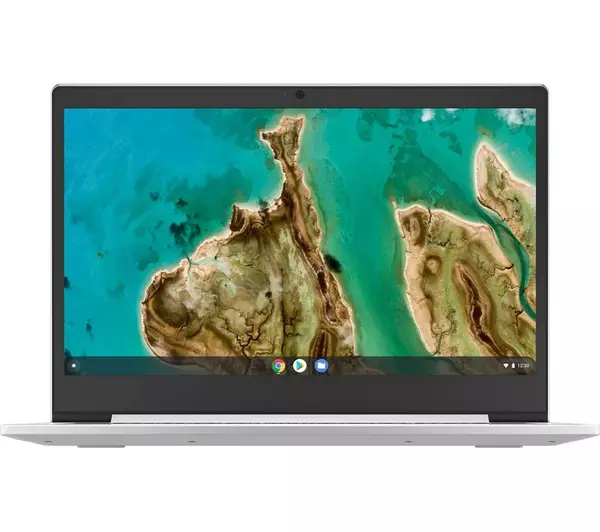

Cosmos Computers
"Out of This World"
Choosing the perfect laptop
Choosing a new laptop can be very frustrating especially when there are +100000 laptops on the market to choose from, even when you know what your looking for and can understand all the hardware component it is still difficult to choose one, so here are a few laptops that we picked out for you to choose from and make it easier for you.
MSI GF63 Thin 15.6" Gaming Laptop - Intel® Core™ i5, RTX 3050, 512 GB SSD
MSI GF63 is great choice for budget Gaming, with a i5 Nividia GeForce RTX 3050 8GB DDR4 ram, this small machine is capable of running almost every game on the market.
The laptop has a full HD diplay screen with 144hz refresh rate, it comes with 8GB of ram but can be easly upgraded when neaded, it also comes with an SSD hard disk to significantly improve loading times in games.
The laptop Price on currys was £849 but now it has a discount of £150 so it costs £699, here is a Link
 Reasons to buy:
Reasons to buy:
- Powerfull graphics card
- 144hz Refresh Rate
- Upgradable
- SSD Hard Disk
Reasons to Avoid:
HP Pavilion x360 14" 2 in 1 Laptop - Intel® Core™ i7, 512 GB SSD, Silver
HP Pavilion is a great multitask laptop, It is best used for editing, working, studying and programming. with a 16GB DDR4 ram and a core i7 this laptop can handel big processing without the need for overspending.
The laptop display is full HD 60hz refresh rate, it has a touch screen to help get the work done, it also comes with a 512GB SSD to help you store more things into the laptop and process data faster.
This laptop cost £899 on currys. here is a Link
Reasons to buy:
- Good Battery Life
- Touch Screen
- Fast Processing
Reasons to Avoid:
- Not a Great Graphics Card
LENOVO IdeaPad 3i 14" Chromebook - Intel® Celeron®, 64 GB eMMC, Grey
Lenovo Ideapad is budget friendly choice for everyday use, if your not looking for anything fancy and just want a portable pc to watch movies, series or youtube video and video chat with others, this laptop can also be used in simple workplaces and for studying.
It runs on Chrome OS instead of the usual windows which might be a set back for many, with a 4GB, LPDDR4, Intel Celeron N4020 processor and a Full HD display this laptop can get simple tasks done, but its not best for bigger projects
This laptop costs £249 on currys, here is a Link

Reasons to buy:
- Everyday use
- Good Battery Life
- Budget Friendly
Reasons to Avoid:
- Chrome OS Operating System
- Not Really Powerfull
ASUS ROG STRIX G15 15.6" Gaming Laptop - AMD Ryzen 7, RTX 3070 Ti, 1 TB SSD
ASUS ROG STRIX is a beast inside a small machine this laptop can handle anything, gaming, editing, working, everyday use. that is if you have the budget to spend it on.
This laptop comes with a 300hz refresh rate display screen, 8GB DDR5 RTX 3070 Ti GPU, 16GB of RAM, 1TB of SSD hard disc storage, an AMD Ryzen 7 processor and a battery type of 3-cell Lithium-ion which surprisingly can run up to 8H unpluged
This laptop costs £1899 on currys, and for what it bring this laptop is worth the price. here is a Link
Reasons to buy:
- Amazing Graphics card
- Good Battery Life
- Great Processing Power
- High Amount of RAM
- 300hz Refresh Rate
- 1TB of SSD
Reasons to Avoid:
- Expensive
- Not the Lightest Weight